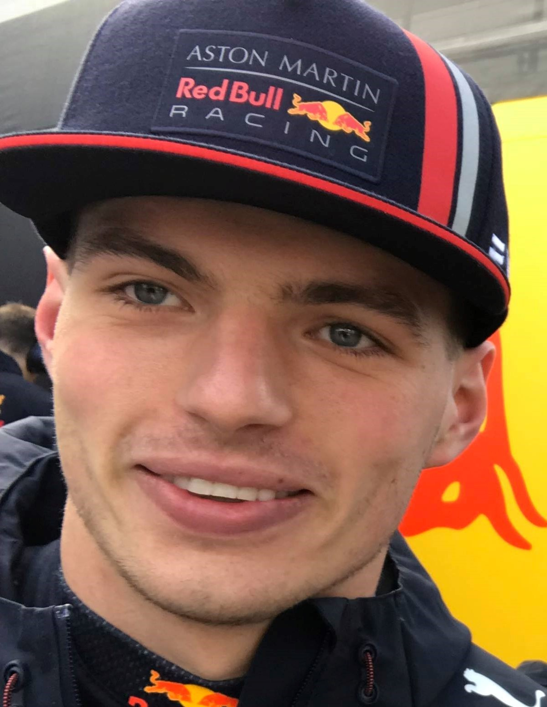
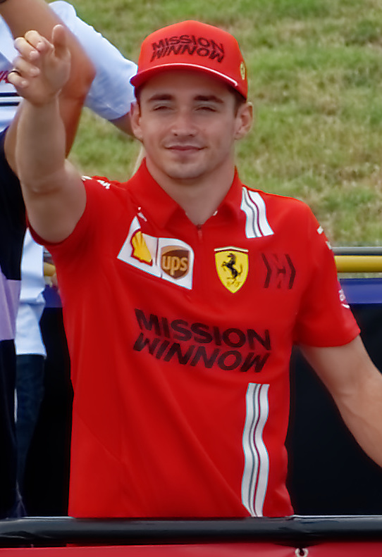

| 1º Lugar | 2º Lugar | 3º Lugar | Max Verstappen | Charles Leclerc | Sergio Pérez |
|---|---|---|
|  |  | .jpg) |
Biografia dos competidores
Max Verstappen
Max Emilian Verstappen é um automobilista neerlandês. Ele é piloto de Fórmula 1 desde 2015,
tendo
feito sua estreia pela equipe Toro Rosso. Foi duas vezes campeão da Fórmula 1 em 2021 e
2022, e
terminou em terceiro lugar em 2019 e 2020 com a Red Bull Racing, equipe pela qual corre
desde
2016.
Nascimento: 30 de setembro de 1997 (idade 25 anos), Hasselt, Bélgica
Parceira: Kelly Piquet (desde 2021)
Vitórias: 35
Equipe atual: Red Bull Racing
Datas de entrada: 2016 (Red Bull Racing), 2015 (Scuderia Toro Rosso)
Charles Leclerc
Charles Marc Hervé Perceval Leclerc, mais conhecido como Charles Leclerc, é um
piloto de
automóveis monegasco que compete na Fórmula 1 pela equipe Ferrari. Integrou a
Ferrari
Driver
Academy desde 2016, e ganhou o campeonato da GP3 Series em 2016 e o Campeonato de
Fórmula 2
da FIA em 2017, pela ART Grand Prix.
16 de outubro de 1997 (idade 25 anos), Monte Carlo, Mônaco
Vitórias: 35
Equipe atual: Scuderia Ferrari
Programas de TV: F1: Dirigir Para Viver
Sergio Pérez
Sergio Michel Pérez Mendoza é um automobilista mexicano que atua na Formula 1 e
atualmente faz parte da grade de pilotos da equipe Red Bull Racing.
Nascimento: 26 de janeiro de 1990 (idade 33 anos), Guadalajara, México
Equipes atuais: Red Bull Racing, Sahara Force India F1 Team, Racing Point
Equipes
Parceira: Kelly Piquet (desde 2021)
Vitórias: 35
Equipe atual: Red Bull Racing
Datas de entrada: 2016 (Red Bull Racing), 2015 (Scuderia Toro Rosso)
Charles Leclerc
Charles Marc Hervé Perceval Leclerc, mais conhecido como Charles Leclerc, é um
piloto de
automóveis monegasco que compete na Fórmula 1 pela equipe Ferrari. Integrou a
Ferrari
Driver
Academy desde 2016, e ganhou o campeonato da GP3 Series em 2016 e o Campeonato de
Fórmula 2
da FIA em 2017, pela ART Grand Prix.
16 de outubro de 1997 (idade 25 anos), Monte Carlo, Mônaco
Vitórias: 35
Equipe atual: Scuderia Ferrari
Programas de TV: F1: Dirigir Para Viver
Sergio Pérez
Sergio Michel Pérez Mendoza é um automobilista mexicano que atua na Formula 1 e
atualmente faz parte da grade de pilotos da equipe Red Bull Racing.
Nascimento: 26 de janeiro de 1990 (idade 33 anos), Guadalajara, México
Equipes atuais: Red Bull Racing, Sahara Force India F1 Team, Racing Point
Equipes
Nascimento: 26 de janeiro de 1990 (idade 33 anos), Guadalajara, México
Equipes atuais: Red Bull Racing, Sahara Force India F1 Team, Racing Point
Equipes
| Equipes | Alfa Romeo F1 Team Orlen |
|---|
| Scuderia AlphaTauri |
| BWT Alpine F1 Team |
| Aston Martin Aramco Cognizant F1 Team |
| > Haas F1 Team |
| McLaren F1 Team |
| Mercedes-AMG Petronas F1 Team |
| Oracle Red Bull Racing |
| Williams Racing |
Resultados e classificação
| Lugar | Vencedor | Equipe |
| Bahrein Grande Prêmio do Barém | Charles Leclerc | Ferrari |
| Grande Prêmio da Arábia Saudita | Max Verstappen | Red Bull Racing-RBPT |
| Grande Prêmio da Austrália | Charles Leclerc | Ferrari | Grande Prêmio da Emília-Romanha | Max Verstappen | Red Bull Racing-RBPT |
| Grande Prêmio de Miami | Max Verstappen | Red Bull Racing-RBPT | Grande Prêmio da Espanha | Max Verstappen | Red Bull Racing-RBPT |
| Grande Prêmio de Mônaco | Sergio Perez | Red Bull Racing-RBPT | Grande Prêmio do Azerbaijão | Max Verstappen | Red Bull Racing-RBPT |
| Grande Prêmio do Canadá | Max Verstappen | Red Bull Racing-RBPT | Grande Prêmio da Grã-Bretanha | Carlos Sainz Jr. | Ferrari |
| Grande Prêmio da Áustria | Charles Leclerc | Ferrari | Grande Prêmio da França | Max Verstappen | Red Bull Racing-RBPT |
| Grande Prêmio da Hungria | Max Verstappen | Red Bull Racing-RBPT |
| Grande Prêmio da Bélgica | Max Verstappen | Red Bull Racing-RBPT |
| Grande Prêmio dos Países Baixos | Max Verstappen | Red Bull Racing-RBPT |
| Grande Prêmio da Itália | Max Verstappen | Red Bull Racing-RBPT |
| Grande Prêmio de Singapura | Sergio Perez | Red Bull Racing-RBPT |
| Grande Prêmio do Japão | Max Verstappen | Red Bull Racing-RBPT |
| Grande Prêmio dos Estados Unidos | Max Verstappen | Red Bull Racing-RBPT |
| Grande Prêmio da Cidade do México | Max Verstappen | Red Bull Racing-RBPT |
| Grande Prêmio de São Paulo | George Russell | Mercedes |
| Grande Prêmio de Abu Dhabi | Max Verstappen | Red Bull Racing-RBPT |